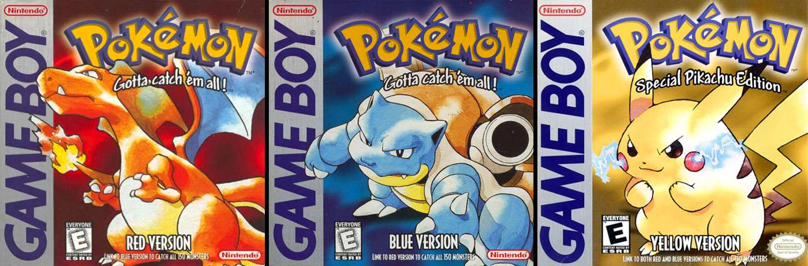

Dive into the world of PokeLand! A fansite dedicated for Pokemon fans all around the world! Do you think you know every Pokemon? Test your knowledge with our Who's That Pokémon? mini-game and see if you reach the high score!
Stay tuned for our upcoming National Dex and Trainer Builder feature, where you’ll be able to create and customize your own Trainer profile, complete with your Pokémon team, favorite items, and more! Join us on this journey as we continue to grow and add new features to make your Pokémon experience truly legendary!
Today's Pokemon of the day is
What is your question here?
Are you ready to put your Pokemon knowledge to the test? Click the button below to play "Whose that Pokemon!" and see if you can make a high score!

Never played the Pokemon games before? Don't worry we have you covered!
What is Pokemon?
Pokemon, also known as "Pocket Monsters" is a video game series created by GameFreak founder and developer Satoshi Tajiri. Realeased in Japan in 1996 with their first game Pokemon Red and Green, introducing players to a world filled with mysterious creatures that could be caught, trained, and battled. Since then, Pokémon has grown into a global phenomenon, spanning games, trading cards, TV shows, movies, and more! Each Pokémon species has unique abilities, types, and personalities, making them fun to collect, train, and bond with. From capturing your first Pokémon to becoming a Champion, the world of Pokémon offers endless adventure, strategy, and friendship. For more information about Pokemon and their games we recommend Bulbapedia here for more information.
